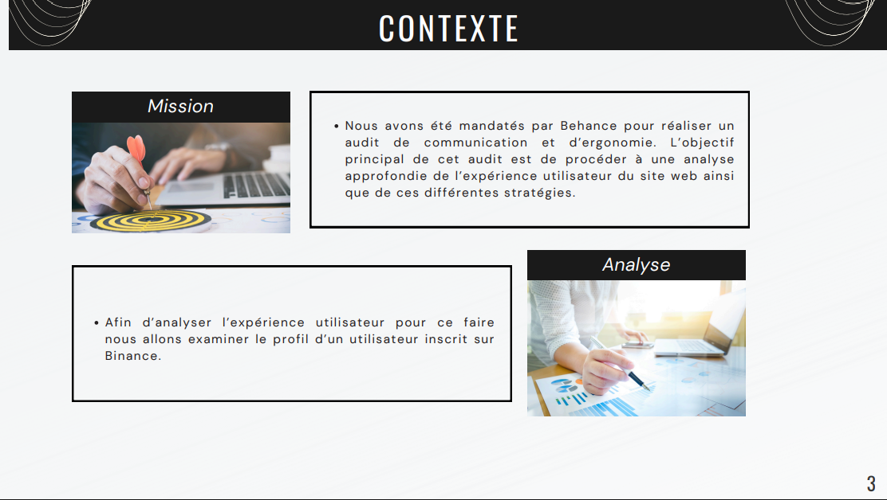
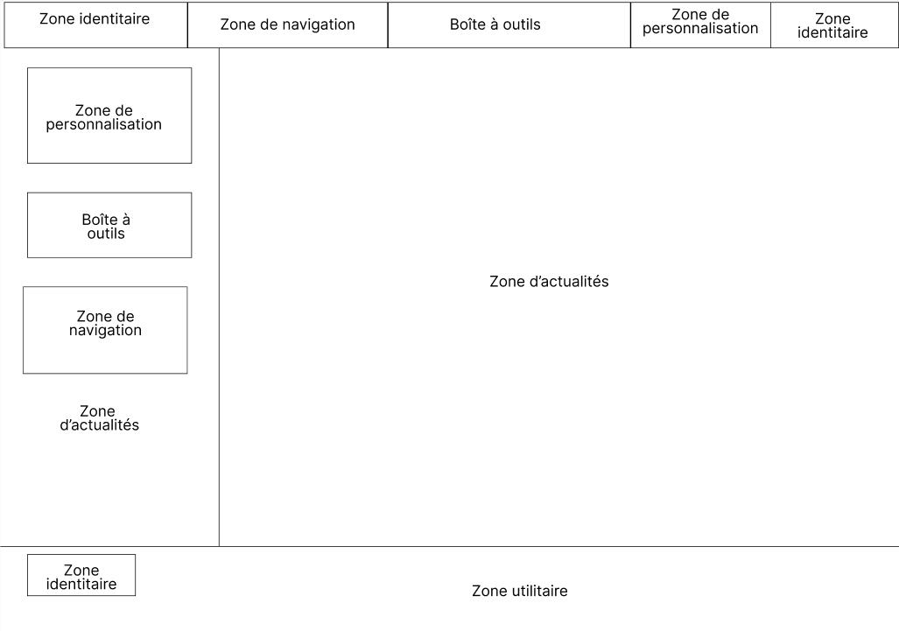
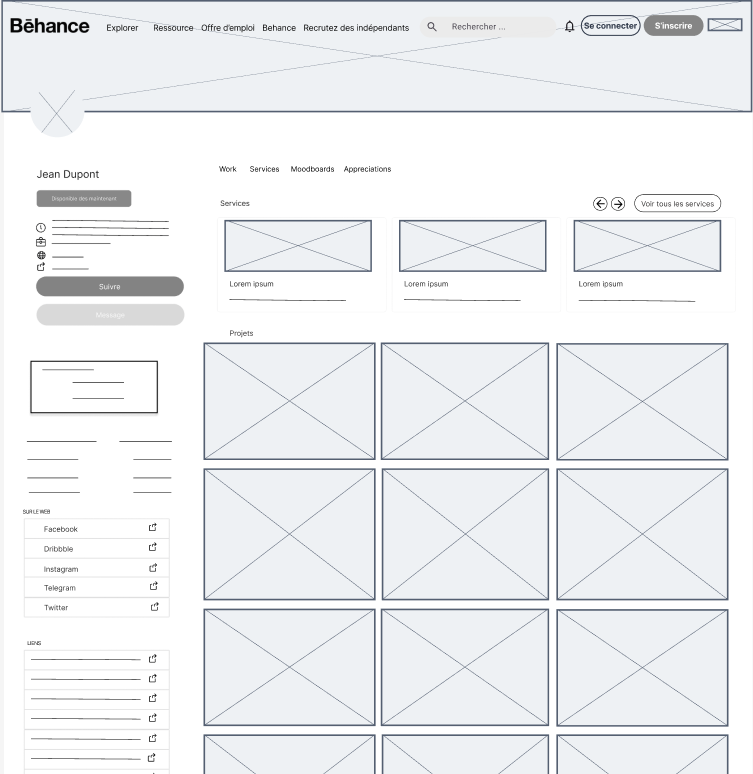
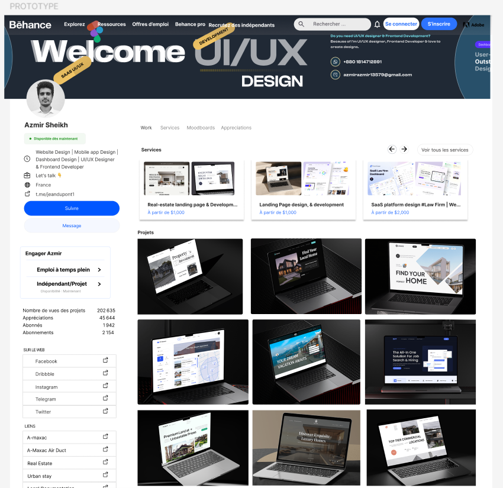

SAE 1.01 : Auditer une communication numérique
Réalisé en octobre 2024 dans le cadre du BUT MMI
Objectifs
- Analyser un site web, un produit ou une marque en utilisant les ressources liées à la communication et à l'ergonomie
- Intégrer les besoins des utilisateurs dans la compréhension de la situation de communication
- Maîtriser les méthodes professionnelles d'audit et la rédaction de rapports d'analyse

Démarche
Pour cette SAE réalisée individuellement, j'ai commencé par choisir un profil de graphiste sur Behance, une plateforme connue pour les portfolios créatifs. Ensuite, j'ai effectué plusieurs audits complémentaires :
- Un audit contextuel pour comprendre l'histoire et la concurrence de Behance
- Un audit économique pour analyser le modèle d'affaires et l'écosystème technologique
- Un audit stratégique de communication
- Un audit d'accessibilité et d'ergonomie
À partir de ces analyses, j'ai créé sur Figma une version prototype du profil du graphiste choisi. J'ai commencé par un kit d'interface, puis j'ai élaboré un wireframe et un zoning précis.
Audit ergonomique
L'audit économique m'a permis de mieux comprendre l'environnement et l'histoire de Behance. Voici les trois analyses que j'ai réalisées :
- Stratégies de communication : Identifier les stratégies d'énonciation, les modes d'organisation et les principes de zoning à reproduire
- Accessibilité & ergonomie : Classifier le type de site et analyser les parcours utilisateurs
- Sémiologie : Décrypter le style graphique et les codes visuels à respecter
Les ressources R103 et R105 ont été très utiles pour ces audits, m'aidant à développer les compétences AC11.01 et AC11.05.
Zoning et Wireframe
En suivant les techniques de la ressource R203, j'ai créé un zoning pour identifier et organiser les différents types de contenus du prototype. Voici la structure :
- Zone identitaire : éléments identitaires (logos)
- Zone de personnalisation : fonctionnalités de connexion
- Boîte à outils : intégration de la barre de recherche
- Zones d'actualité : espaces dédiés à l'actualité
- Zone utilitaire : footer

Le wireframe a ensuite précisé le dimensionnement et le positionnement exacts des éléments. Cette étape, sans couleurs et avec des repères simplifiés pour les images, a facilité la transition vers le prototype final. La ressource R1.03 a été particulièrement utile pour développer mes compétences en ergonomie et accessibilité (AC11.02, AC11.03, AC11.04, AC11.05).

Réalisation du prototype
La phase finale a consisté à transformer le wireframe en prototype fonctionnel sur Figma, en intégrant les éléments du kit d'interface. Cette étape m'a permis de visualiser concrètement l'application des principes ergonomiques.

Bilan
Ce projet a vraiment renforcé mes compétences en analyse ergonomique. J'ai mieux compris l'importance de l'accessibilité et l'adaptation de l'interface aux besoins des utilisateurs. Cette SAE m'a également permis de mettre en pratique une méthodologie structurée d'audit, essentielle dans un contexte professionnel.
Livrables
Voici les deux fichiers PDF que j’ai produits pour cette SAE :
Compétences développées
Présenter une organisation, ses activités et son environnement (économique, sociologique, culturel, juridique, technologique, communicationnel et médiatique)
Évaluer un site web, un produit multimédia ou un dispositif interactif existant en s'appuyant sur des guides de bonnes pratiques
Produire des analyses statistiques descriptives et les interpréter pour évaluer un contexte socio-économique
Analyser des formes médiatiques et leur sémiotique
Identifier les cibles (critères socio-économiques, démographiques, géographiques, culturels...)